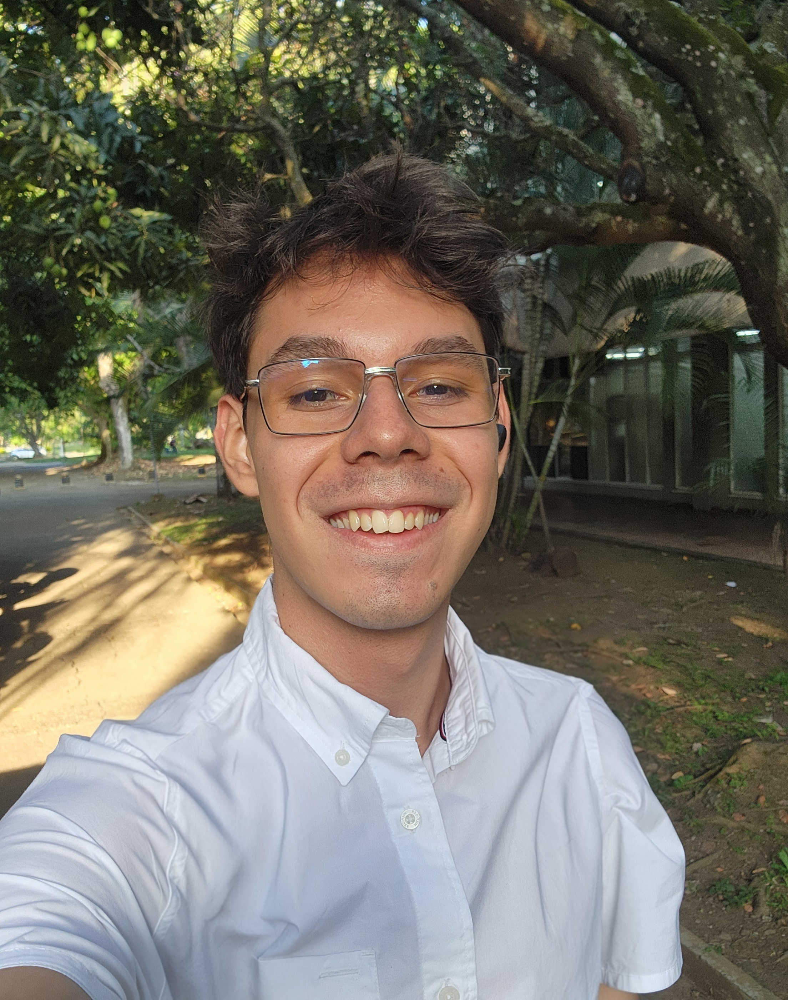

Diego Rojas
Undergraduate Student
Biography
Diego is originally from Cali, Colombia, where he completed his B.Sc. in Chemistry at Universidad del Valle. His undergraduate research focused on the synthesis of hydrazone-based sensors for molecular logic gates in supramolecular chemistry, including TDDFT calculations to study excited states and photoisomerization mechanisms, and extended to the development of activity-based sensors (ABS) for ROS/RNS in cellular environments during a research internship at the University of Delaware. He is now joining the Blaskovits group as a Master's student in Chemistry at the University of Alberta, where he aims to combine his experimental background with computational and machine learning approaches for data-driven molecular modeling and the accelerated discovery of sustainable materials. Outside the lab, Diego enjoys drawing, crocheting, and exploring new cities.